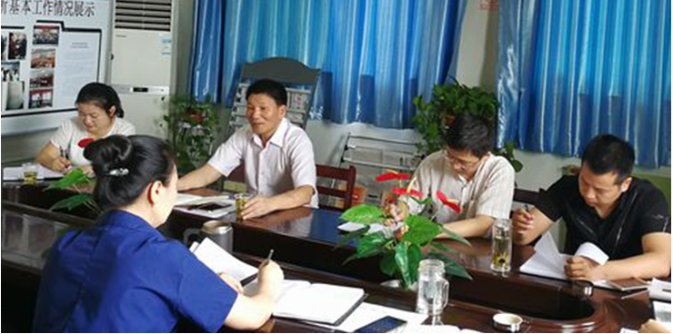

2017年6月25日上午，中国共产党湖北省第十一次代表大会在武昌洪山礼堂隆重开幕。蒋超良同志代表中共湖北 省第十届委员会向大会作了题为《高举旗帜牢记嘱托 全面建成小康社会 开启湖北“建成支点、走在前列”新征程》 的报告。7月6日，省社科院党组书记张忠家同志作为马研所支部普通党员、院党组联系基层支部的院领导
张书记首先介绍省党代会圆满完成了预定议程，取得了丰硕成果，吹响了全面建成小康社会、开启湖北“建成支 点、走在前列”新征程的进军号角。接着谈了这次作为会议列席人员，当场聆听以及之后反复学习报告后的体会。 他认为，总的来说，省党代会报告体现了“三个突出”，明确了“两个任务”，“坚持了“一条主线”。

Brian Kobilka和张教授都来自斯坦福，大家知道斯坦福是硅谷创新的发源地，很大的特点就是把科技和商业 完美有机地结合在一起，我觉得这个是非常值得全球尤其是中国去学习的。
虽然说中国没有像国外的斯坦福、哈佛这样的私立学校，更多的还是公立学校，但是我们还是做了很多创新 的尝试。腾讯和清华很早就成立了一个联合实验室，近期也转向研究AI。包括这一次，我们共同举办了“清 华-青腾未来科技学堂”。我们希望通过不断地尝试来促进科研和产业界结合与创新。
虽然说中国没有像国外的斯坦福、哈佛这样的私立学校，更多的还是公立学校，但是我们还是做了很多创新 的尝试。腾讯和清华很早就成立了一个联合实验室，近期也转向研究AI。包括这一次，我们共同举办了“清 华-青腾未来科技学堂”。我们希望通过不断地尝试来促进科研和产业界结合与创新。
 微信公众号
微信公众号